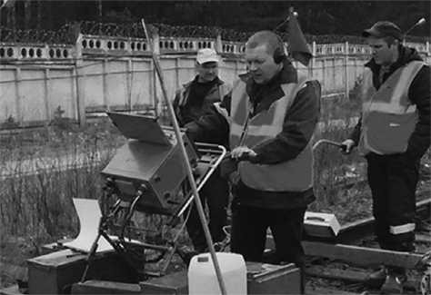

Дефектоскопия
Дефектоскопия старогодных материаллов ВСП
Все наши материалы проходят тщательную профессиональную дефектоскопию. Мы внимательно обследуем конструкцию старогодных материалов, чтобы убедиться в их сохранности и безопасности.
Оборудование, которое мы используем для поиска дефектов, обеспечивает сплошной контроль рельсов — проверяются степень износа материала, качество поверхности катания.


Дефектоскопия рельсов осуществляется методом неразрушающего контроля и определяет:
Однородность материала
Нарушения однородности структуры
Места поражения коррозией
Несоответствие начальному химическому составу
Отклонения в размере и другие дефекты